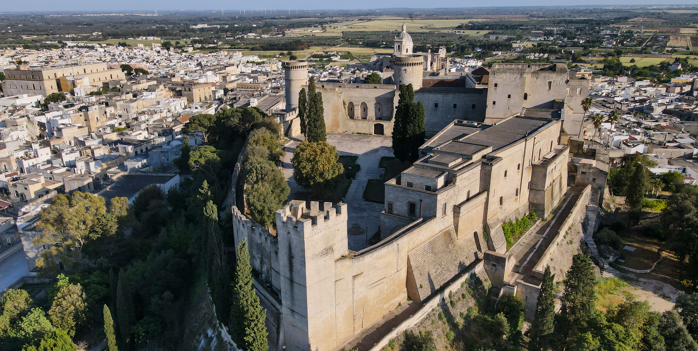
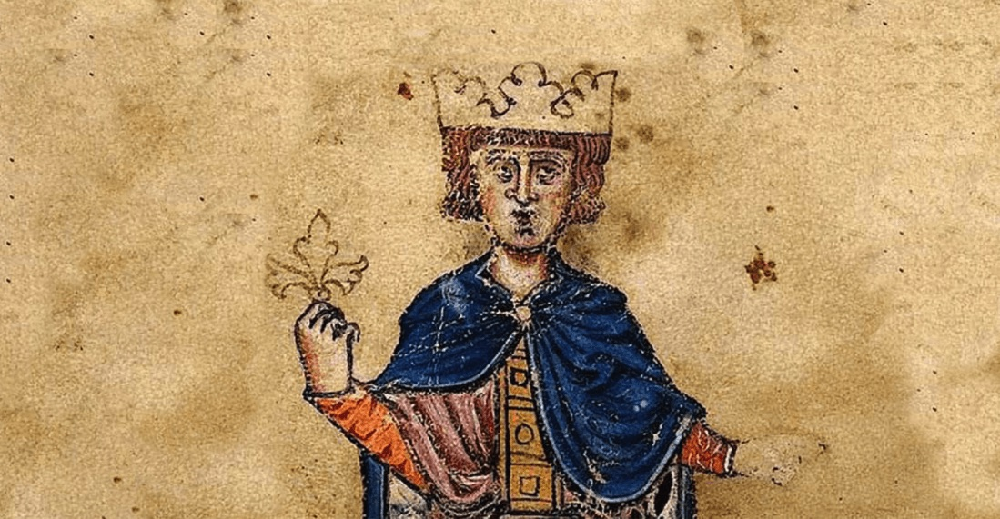

La Storia di Oria
Duemila anni sul colle del Vaglio
Le Origini Messapiche
Le origini di Oria si perdono tra storia e leggenda. Secondo Erodoto, la città nacque da un gruppo di Cretesi naufragati sulle coste del Salento, che scelsero il colle più alto per fondare un primo insediamento chiamato Hyria — nome che probabilmente richiamava Yrìa, città della Beozia da cui provenivano. Dall'VIII secolo a.C. il centro si sviluppò progressivamente fino a diventare la capitale politica della confederazione messapica, intrattenendo intensi rapporti con i centri del Salento e della Magna Grecia. Il legame più importante fu con Taranto: commerciale e culturale da un lato, rivale e militare dall'altro. Questo contrasto culminò nel 473 a.C. con una grande battaglia tra Tarantini, Reggini e Messapi, che indebolì entrambe le parti. Nel 272 a.C., con la caduta di Taranto, anche i Messapi entrarono nell'orbita di Roma. Oria mantenne comunque il suo ruolo di rilievo, tanto che nell'88 a.C. ottenne lo status di municipium romanum, integrandosi nel sistema amministrativo di Roma senza perdere la propria identità storica.

Il nome Uria compare nelle fonti greche e latine già nel VI secolo a.C. Una delle particolarità di Oria è la sua posizione costruita su più colli, caratteristica che nei secoli l'ha resa un luogo naturalmente strategico e facile da difendere. Proprio questa conformazione del territorio ha influenzato lo sviluppo della città fin dall'antichità, contribuendo alla nascita di un centro urbano importante e ben collegato con il resto del Salento.
Età Romana
Quello che sappiamo su Oria nel periodo romano è molto vago, si sa che Oria era diventata un importante centro commerciale, culturale e militare (anche detto municipium romanum) nella rete stradale romana. La via Appia e i suoi rami collegavano Oria ai grandi centri dell'Impero, facilitando lo scambio di beni e idee. Di seguito sono riportate alcune ricostruzioni di monete battute ad Oria in epoca romana.


I Bizantini
Dopo la caduta dell'Impero Romano d'Occidente nel 476 d.C., la Puglia entrò nell'orbita di Bisanzio. La presenza bizantina non fu però ininterrotta: Goti e Longobardi misero continuamente alla prova il controllo greco sulla regione. Nel 663 d.C. l'imperatore Costante II sbarcò a Taranto con ventimila soldati e riconquistò buona parte della Puglia, ma il re longobardo Grimoaldo lo respinse. Costante fuggì in Sicilia, dove fu assassinato in una congiura di palazzo. Senza il loro imperatore, i Bizantini si ritirarono definitivamente dalla Puglia interna. I Longobardi si fermarono però ad Oria senza spingersi oltre, costruendo il Limitone dei Greci — un vallo difensivo che divideva i due mondi. A nord cultura longobarda, a sud cultura bizantina fino a Otranto. Questo confine era anche linguistico: a sud si parlava greco per secoli, nella zona ancora oggi chiamata Grecìa Salentina. I resti del Limitone sono ancora visibili nei pressi del Santuario di San Cosimo alla Macchia.

Il Periodo dei Goti (o Visigoti)
Per quanto riguarda il Medioevo, dobbiamo ricordare che Oria fu attaccata duramente dalle forze dei Goti — chiamati anche Visigoti — che calarono dalla penisola iberica verso l'Italia meridionale. In questo periodo, Oria subì saccheggi e devastazioni, perdendo parte del suo splendore. I Goti cercarono di insediarsi nel territorio della città, ma trovarono resistenza da parte degli abitanti e delle forze bizantine rimaste nella zona. Questa fase di instabilità durò diversi decenni, e le sue tracce sono ancora visibili nelle mura e nelle fondamenta di alcune strutture medievali della città.
I Normanni e il Castello
Con l'arrivo dei Normanni nell'XI secolo, Oria conobbe una nuova stagione di sviluppo. I conquistatori nordici trasformarono il borgo in un importante centro strategico, costruendo e rafforzando le strutture difensive già esistenti. Il castello, che domina ancora oggi la città dall'alto del colle, fu potenziato in questo periodo e divenne simbolo del potere normanno nel Salento. Oria divenne sede di contea e fulcro del controllo normanno sulla Terra d'Otranto.

Federico II di Svevia
Federico II di Svevia, l'imperatore chiamato Stupor Mundi, soggiornò ad Oria e la elevò ulteriormente come sede imperiale. Sotto il suo governo, il castello fu ampliato e dotato di tre torri, assumendo la conformazione che in parte conserva ancora oggi. Federico II promosse anche la convivenza tra le tre culture presenti nel Salento: cristiana, araba ed ebraica. Proprio ad Oria esisteva una fiorente comunità ebraica, la cui storia è legata alla figura del celebre medico Donnolo e alla tradizione della Cabbalah salentina.

Oria ospitò una delle più antiche e importanti comunità ebraiche del Sud Italia. La famiglia di Shabbetay Donnolo, il famoso medico e astrologo medievale, era di Oria. Nel 925 d.C. i Saraceni attaccarono la città, e il giovane Donnolo fu catturato e poi riscattato.
Gli Aragonesi
Con gli Aragonesi, Oria entrò in una fase di relativa stabilità politica, pur rimanendo soggetta alle continue lotte per il controllo del Mezzogiorno. In questo periodo la città vide lo sviluppo di nuove chiese e palazzi nobiliari, e il centro storico assunse progressivamente la forma che riconosciamo oggi. La cattedrale, dedicata all'Assunta, fu ricostruita e ampliata durante questo periodo, diventando il cuore spirituale e architettonico della città.
Il Terremoto del 1743
Il 20 febbraio 1743, un violento terremoto con epicentro nel mar Ionio devastò buona parte del Salento. Oria fu gravemente colpita: molti edifici crollarono o riportarono danni irreparabili, e la popolazione soffrì perdite significative. La ricostruzione che seguì cambiò parzialmente il volto della città, portando a nuove architetture barocche che si sovrapposero alle strutture medievali preesistenti. Questo evento segnò profondamente la memoria collettiva della comunità oriese.
Il terremoto del 1743 è ricordato come uno dei più distruttivi della storia del Salento. Colpì in modo particolare i centri dell'entroterra brindisino e leccese, causando danni enormi al patrimonio edilizio e alla popolazione. Ad Oria, diverse chiese e palazzi nobiliari furono gravemente danneggiati.
Il Novecento e il Torneo
Nel Novecento Oria ha vissuto le trasformazioni della modernità mantenendo vivo il legame con la propria storia. L'evento che più di ogni altro ha contribuito a tenere viva la memoria medievale della città è il Torneo dei Rioni, una rievocazione storica nata nel 1967 che ogni agosto trasforma le strade di Oria in un palcoscenico medievale. Il torneo è preceduto dal solenne Corteo Storico, durante il quale centinaia di figuranti in costume sfilano per le vie del centro riproponendo la corte di Federico II.
Nato nel 1967 per iniziativa di un gruppo di cittadini appassionati di storia locale, il Torneo dei Rioni di Oria è oggi uno degli eventi di rievocazione medievale più importanti del Sud Italia. Quattro rioni — Lama, Castello, Judea e San Basilio — si sfidano in una giostra equestre per la conquista del Palio.
Galleria
 Castello di Oria al tramonto
Area archeologica Pasculli
Monte Papalucio
Moneta messapica — Aphrodite ed Eros
Moneta messapica — Guerriero e aquila
Moneta messapica — Herakles e fulmine
Castello di Oria al tramonto
Area archeologica Pasculli
Monte Papalucio
Moneta messapica — Aphrodite ed Eros
Moneta messapica — Guerriero e aquila
Moneta messapica — Herakles e fulmine